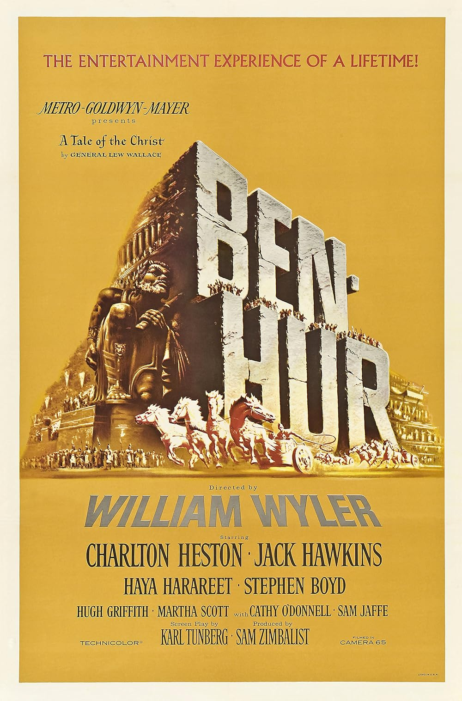

Ben-Hur
32nd Academy Awards
(Oscars 1960)
12 Nominations, 11 Awards
| Nominations | ||
|---|---|---|
| Category | Nominees | Result |
| Best Motion Picture | Sam Zimbalist | Won |
| Actor | Charlton Heston | Won |
| Actor in a Supporting Role | Hugh Griffith | Won |
| Directing | William Wyler | Won |
| Writing (Screenplay--based on material from another medium) | Karl Tunberg | Nominated |
| Cinematography (Color) | Robert L. Surtees | Won |
| Film Editing | John D. Dunning and Ralph E. Winters | Won |
| Art Direction (Color) | Edward Carfagno, Hugh Hunt, and William A. Horning | Won |
| Costume Design (Color) | Elizabeth Haffenden | Won |
| Special Effects | A. Arnold Gillespie, Milo Lory, and Robert MacDonald | Won |
| Sound | Franklin E. Milton | Won |
| Music (Music Score of a Dramatic or Comedy Picture) | Miklos Rozsa | Won |